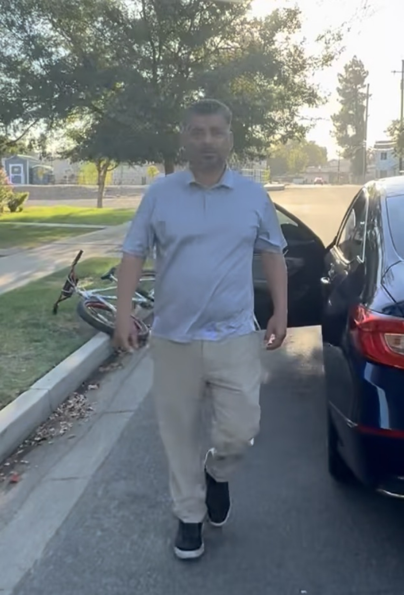
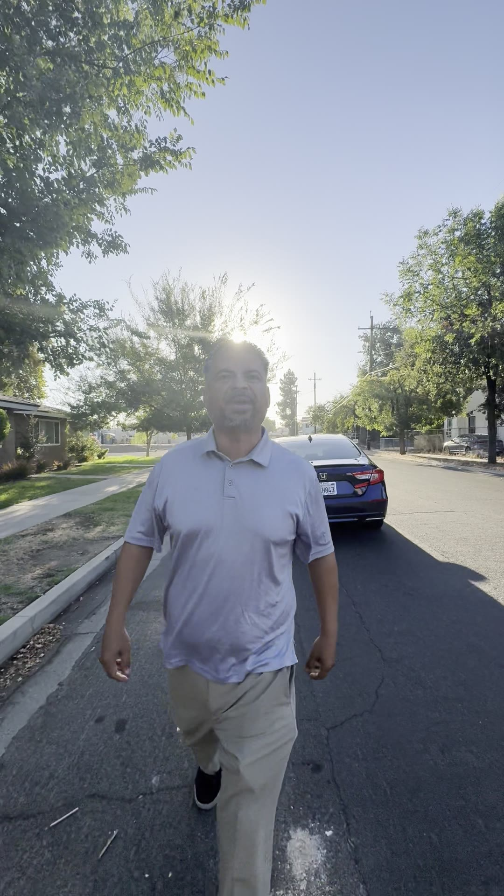
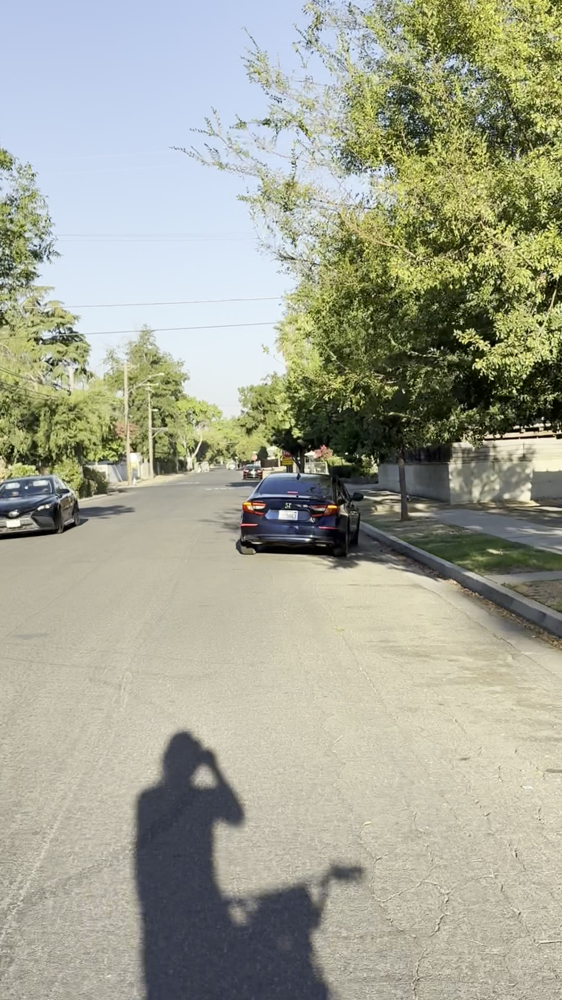
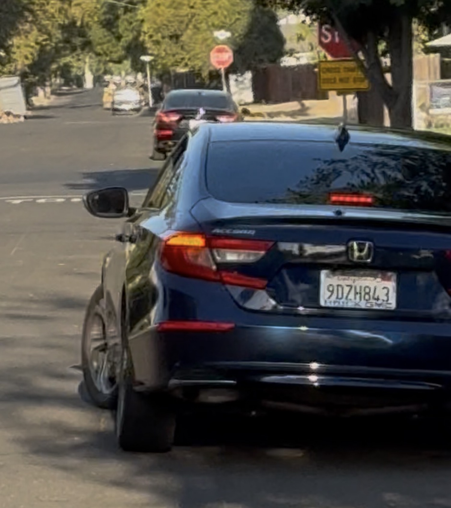

He seemed to want it
The first file was the incident. This file is the audience.
Three days after a driver ran the stop at Thomas and Broadway, left the car, walked toward the camera, told a cyclist to shut the fuck up, offered a fight, and then invented a molestation story for the neighborhood, the short that holds that minute crossed ten thousand views.
That is not a vanity number. It is proof that the behavior travels. People recognize it because they have stood on the same kind of curb. A man who cannot manage a dog in the road, a stop sign, or a two-hand slow-down signal is not a rare specimen in 93728. He is the ordinary cost of living here.
When the cyclist said "enjoy yourself," it was not a taunt tossed into a vacuum. It was a sentence spoken by somebody who already knew the rest of the minute would be performed for an audience. The driver seemed to want the attention. He seemed to get it. He seemed to enjoy what he was doing the whole time he was doing it.
"Well, enjoy yourself."
The camera did the rest. Ten thousand people have now watched a grown man leave a Honda because someone told him to slow down.
The walk
This is the behavior. Not a crop. Not a blur. The open door, the bicycle on the ground, the walk toward the person who asked him to tap the brake.




The short
Play the minute. It is short on purpose. The whole argument fits inside a YouTube Short because the whole argument was a man who could not stay in his car.
Channel AARON. Title on the upload: "I'm talkin to YOU and I said..." Direct link: youtube.com/shorts/Py6vlL1kUvM. The long civic file, with the timed transcript and the 1992 FBI material, lives at Echo and Thomas.
A religious man should not have to do this
Here is the part that does not sit clean.
The man who recorded this is a religious man. The Third Commandment is not a suggestion he keeps for church and drops on Echo Avenue. "You shall not take the name of the Lord your God in vain." Exodus 20:7. Deuteronomy 5:11. It is one of the ten. It is not a style rule. It is a prohibition.
And still the sentence that comes out of the body, when a two-ton machine is being driven like a weapon on a residential block, is the sentence that uses the Name. Goddamnit. Slow your motherfucking car down.
That is not the voice he wants. That is the voice a neighborhood trains into a person who has already tried the civil version. The two-hand signal. The spoken "slow down." The repetition. The naming of PC 415. None of that reached the man getting out of the Honda. What reached him was volume, and even that only reached him enough to make him walk.
A man should not have to commit a commandment to keep a child, a dog, or a bicycle from becoming a body on Thomas Avenue.
The profanity is not the point of the short. The profanity is the evidence that ordinary speech has already failed. If the only way to advise a driver to tap the brake is to take the Lord's name in vain, the neighborhood has already lost a kind of peace that the Penal Code does not know how to name.
Documenting the minute does not feel good. Celebrating ten thousand views of another man's inability to govern himself does not feel good either. The celebration is narrower than that. The file exists. The walk is visible. The plate is checkable. The inversion he tried to plant, that the cyclist was "following people" in order to molest them, did not get to be the only copy in circulation.
This is not unusual
That is the whole point, and it is the part outsiders miss when they watch a short and think they are looking at a freak incident.
It is not unusual here. Reckless speed through stops that have already killed is not unusual. Men who treat a slow-down signal as a personal insult are not unusual. The move from "you're bothering me" to "shut the fuck up" to a sex-crime story is not unusual. What is unusual is putting a neck out far enough to record it, knowing the man coming out of the car might decide the argument is no longer verbal.
That is the real price. You tell somebody to slow their motherfucking car down and you risk getting shot for the advice. You do it anyway because the alternative is pretending the pavement is safe when it is not. The Tower District has already paid in bodies for that pretense. Thomas and Broadway is not a theoretical intersection. A neighbor down the street had his back broken at Van Ness and Belmont by a driver running a signal. The people who live here are not inventing a danger to justify a video.
So the short stays up. The stills stay unblurred. The sentence "enjoy yourself" stays in the record as what it was: a man thinking ahead, while another man performed his anger, that the performance would find an audience.
It found one. Ten thousand is only the first round number. The behavior is older than the view count, and it will outlast this page unless the neighborhood keeps making examples of it.
What this page is for
This is not a request that anyone hunt the driver. It is not a home address. It is not a name that was never spoken onto the recording. It is the public face of a public incident, published because the man who created the incident also tried to write the caption.
His caption was: watch out for the guy on the bike. The actual file is: watch the man who ran the stop, then got out, then reached for the worst word he could find.
The first story holds the transcript, the statute, and the 1992 Lanning material on what happens when people weaponize the language of child protection. This story holds the milestone and the commandment. They belong next to each other.
Sources
- YouTube Short, channel AARON, "I'm talkin to YOU and I said...": youtube.com/shorts/Py6vlL1kUvM. 10,000 views counted by the uploader on August 29, 2026.
- Prior civic record: Echo and Thomas. Plate 9DZH843. Timed transcript. Phone video IMG_3020.MOV, August 26, 2026, 7:39:17 a.m. PDT.
- Still photograph published here as images/walk.jpg, taken from the same incident as the short.
- Exodus 20:7 and Deuteronomy 5:11. The Third Commandment. "You shall not take the name of the Lord your God in vain."
- California Penal Code section 415, disturbing the peace.
- City of Fresno Planning Commission, August 19, 2026, official comment beginning 1:49:11: MCOhw7L1KnI.
Close
He wanted the attention. He got ten thousand pairs of eyes. That is not cruelty. That is what happens when you leave the car to punish a person for asking you to slow down, and somebody keeps the file.
A religious man should be able to keep the Third Commandment and still keep a residential street from being used as a runway. Until that is true here, the short stays up, the walk stays in the light, and the sentence stands.
Enjoy yourself.